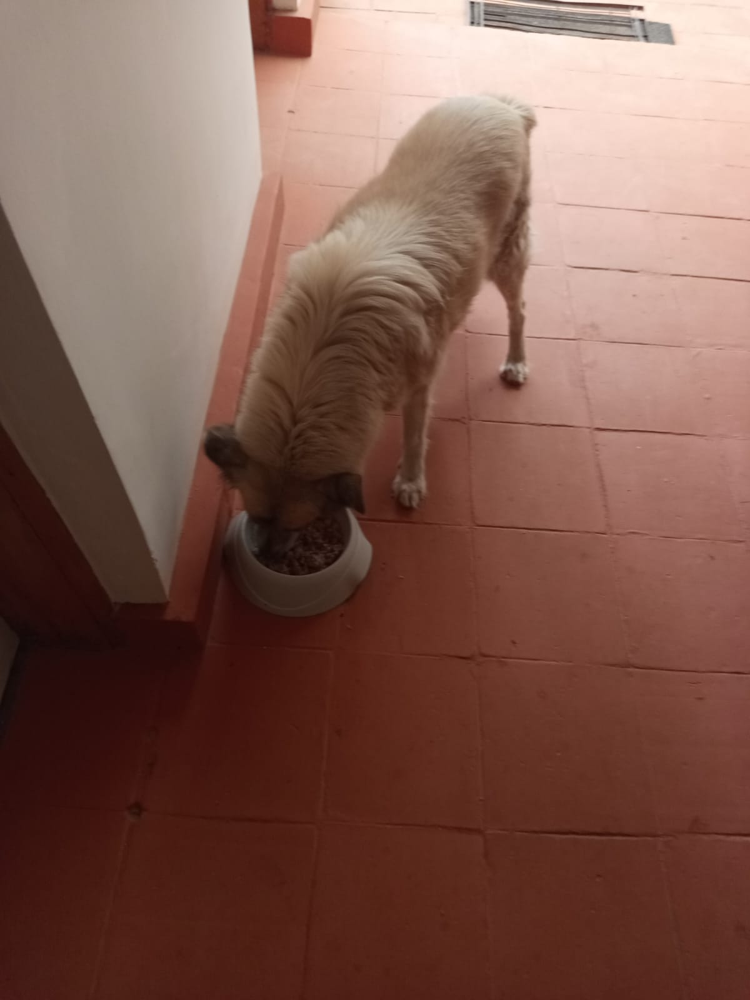

Mucheru World of Golf
Golf course civil engineering, subterranean storm drainage connections, bulk spoil management, and arboriculture preparations advanced actively under the coordinated leadership of Mr. Gichuhi and Ken:
- Connecting Drainage Trench from Green 15 to Dam 1: Civil excavation teams laid out and dug a primary outfall drainage channel connecting Putting Green No. 15 directly to Dam 1. The trench alignment was surveyed and guided with a high-tension stringline across open terrain to ensure a continuous downhill gradient, enabling gravity flow from Green 15's subterranean pipe grid into the main reservoir.
- Connecting Drainage Trench from Green 6 to Dam 1 (Paused for Engineering Review): Laborers excavated an extensive drainage trench leading from Green No. 6 toward Dam 1, cutting deep into dense red loam subsoil. As the excavation progressed along the contour, channel depth reached substantial depth (waist-deep). In accordance with engineering protocol, trenching on this alignment was paused to prevent excessive trench wall slope instability, pending site inspection and technical advice from Joe Kamau regarding invert levels and pipeline grading.
- Designated Murram Dump Zoning (Dam 1 & Dam 3): Supervisory personnel surveyed and pegged designated murram dumping locations on the perimeter embankments of Dam 1 and Dam 3. Establishing these designated dumping stations ensures that excavated spoil from future green construction and dam earthmoving is systematically stockpiled for embankment reinforcement without encroaching on playing corridors.
-
Arboriculture Aggregate & Soil Preparation for Palm Trees: Critical soil amendment and backfilling materials were delivered to active perimeter planting basins:
- • Charcoal Dust Delivery: 10 large woven sacks of charcoal dust were delivered and offloaded in the evening, ready to be blended into palm tree planting pits to maximize rootzone moisture retention and nutrient exchange.
- • Quarry Sand Haulage: 1 pickup truckload of washed building sand was transported from the quarry and dumped directly at the golf site for blending with topsoil.
- • Mixed Sand & Red Loam Tractor Haulage: The farm tractor completed haulage cycles transporting premixed sand and red volcanic soil from the borrow pit quarry directly to palm tree planting stations.
- Boundary Fencing Timber Logistics: The red farm tractor and trailer were utilized to haul heavy treated timber fence posts across the estate dirt access track to designated boundary distribution points along perimeter fence lines.
- Perimeter Utility Trenching: Laborers continued manual excavation along the linear perimeter trench parallel to the wire mesh fence with black strainer posts, aligning the trench for buried HDPE irrigation line routing.
Key Accomplishments — Mucheru World of Golf
Connecting drainage channel from Green 15 to Dam 1 excavated along surveyed stringline; Green 6 to Dam 1 trenching advanced and prudently paused for Joe Kamau's depth review; spoil dumping zones pegged on Dams 1 & 3; 10 sacks of charcoal dust, 1 pickup load of quarry sand, and tractor loads of mixed sand/red soil delivered for palm tree planting; and boundary timber hauled by tractor.
🎥 Mucheru World of Golf — Site Operations Progress Video (September 17, 2026)
Field video recording documenting connecting drainage trench excavation from Green 15 and Green 6 to Dam 1, trench depth assessment, tractor aggregate movements, and palm tree planting preparation.
Comprehensive 18-hole putting green engineering audit detailing foundation matrices, pumice aggregate leveling, architectural contouring, and subterranean drainage outfalls. Highlighting incremental progress achieved on September 17, 2026:
| Green | Current Technical & Agronomic State | Milestone Status |
|---|---|---|
| Green 1 | Red volcanic loam spread; volcanic pumice aggregate applied and leveled; subgrade drainage trenches excavated (Sep 15). | Trenched & Pumice Leveled |
| Green 2 | Red volcanic loam spread; volcanic pumice aggregate applied and leveled; subgrade drainage trenches excavated (Sep 15). | Trenched & Pumice Leveled |
| Green 3 | Red volcanic loam spread; volcanic pumice applied and leveled; subgrade drainage trenches excavated (Sep 15); fairway 4 approach leveled. | Trenched & Pumice Leveled |
| Green 4 | Architectural contouring executed: reshaped into organic bean-shaped complex (Sep 16); red volcanic loam spread; volcanic pumice applied and leveled; subgrade drainage trenched; fairway playing corridor cleared. | Reshaped (Bean) & Trenched |
| Green 5 | Ready. Fully established mature championship putting green turfgrass under active pop-up sprinkler irrigation conditioning. | Ready • Established Turf |
| Green 6 Today | Connecting drainage trench excavation toward Dam 1 commenced (Sep 17); trenching temporarily paused as channel depth became excessively deep, awaiting engineering advice from Joe Kamau; riversand added and leveled; red loam spread; subgrade drainage trenches cut. | Dam Outfall (Paused) |
| Green 7 | Subgrade drainage trenching actively excavated across layout grid (Sep 16); white lime grade contours established; sub-base preparation advancing. | Trenched & Subgrade Prep |
| Green 8 | Riversand applied during earlier phases but remains unleveled; red volcanic loam spread; subgrade drainage trenches excavated (Sep 15); surrounding slopes graded. | Riversand Unleveled |
| Green 9 | Architectural shaping completed; red volcanic loam spread; volcanic pumice applied and graded; subgrade drainage trenches excavated (Sep 15). | Trenched & Pumice Graded |
| Green 10 | Hardcore foundation fractured; perforated PVC drainage lines net-wrapped; red volcanic loam spread; volcanic pumice applied and leveled; drainage trench cut (Sep 14). | Pumice Leveled & Trenched |
| Green 11 | Hardcore sub-base stabilized; separation membrane placed; red volcanic loam spread; volcanic pumice aggregate spread and leveled; subgrade drainage trenches excavated. | Trenched & Pumice Leveled |
| Green 12 | Hardcore stone foundation packed; separation membrane placed; red volcanic loam spread; volcanic pumice aggregate spread and leveled; subgrade drainage trenches excavated. | Trenched & Pumice Leveled |
| Green 13 | Hardcore rock fractured; red volcanic loam spread; volcanic pumice leveled; subgrade drainage trenches excavated (Sep 14). | Trenched & Pumice Leveled |
| Green 14 | Hardcore base and moisture-barrier membrane installed; red volcanic loam spread; volcanic pumice sub-base graded; sole remaining green on course awaiting drainage trench excavation. | Awaiting Final Trenching |
| Green 15 Today | Connecting outfall drainage trench actively excavated directly to Dam 1 along surveyed stringline (Sep 17); hardcore rock foundation fractured; separation membrane installed; red volcanic loam spread; volcanic pumice graded; subgrade drainage trenches cut. | Connected to Dam 1 |
| Green 16 | Hardcore foundation bed fractured and packed; separation membrane installed; red volcanic loam spread; volcanic pumice graded; subgrade drainage trenches excavated (Sep 14). | Trenched & Pumice Graded |
| Green 17 | Hardcore rock grid packed; red volcanic loam spread; separation membrane installed; volcanic pumice graded; subgrade drainage trenches excavated (Sep 14). | Trenched & Pumice Graded |
| Green 18 | Architectural contouring executed: putting green reshaped to organic bean shape (Sep 16); hardcore rock fractured; red volcanic loam spread across foundation and collars; volcanic pumice aggregate leveled; subgrade drainage trenched. | Reshaped (Bean) & Trenched |
Comprehensive 18-hole championship teebox platform audit tracking precision earthwork leveling, structural embankments, and playing corridor alignments. Highlighting updates on September 17, 2026:
| Teebox | Current Technical & Earthwork State | Platform Status |
|---|---|---|
| Tee 1 | Platform leveled, graded, and compacted with mass murram fill during course bulk earthmoving. | Platform Leveled |
| Tee 2 | Foundation fill dumped and platform rough-leveled using 8 tipper truckloads of structural fill. | Fill Placed & Leveled |
| Tee 3 | Foundation fill dumped and platform rough-leveled using 8 tipper truckloads of structural fill. | Fill Placed & Leveled |
| Tee 4 | Championship launch platform precision-graded and leveled to design elevation. | Precision Leveled |
| Tee 5 | Playing platform leveled, compacted, and adjusted to align with fairway playing corridor. | Platform Compacted |
| Tee 6 | Precision leveling and compaction completed along the boundary tree corridor. | Platform Leveled |
| Tee 7 | Finalized. Elevated plateau leveled, compacted, and reinforced with a perimeter protective earth berm along fence line. | Finalized • Berm Complete |
| Tee 8 | Graded, leveled, and contour-adjusted to match fairway transitions and surrounds. | Contour Adjusted |
| Tee 9 | Playing platform leveled and surrounding perimeter ground graded (Sep 1). | Platform Leveled |
| Tee 10 | Graded and compacted platform serving the start of the back-nine playing corridor. | Platform Compacted |
| Tee 11 | Rough shaping, elevation grading, and Backhoe subsoil leveling completed (Sep 7). | Shaped & Graded |
| Tee 12 | Dual platforms established: primary championship tee resized; new forward Ladies' Tee platform constructed (Sep 5). | Dual Platforms Complete |
| Tee 13 | Playing platform completely reshaped, contour-leveled, and perimeter shoulders graded to match fairway transition (Sep 16). | Reshaped & Leveled |
| Tee 14 | Playing platform reshaped, elevation precision-leveled, and protective boundary embankment reinforced (Sep 16). | Reshaped & Leveled |
| Tee 15 | Leveled platform and primary irrigation tie-in zone; main HDPE waterline laid along boundary trench from gate to Tee 15 (Sep 15). | Irrigation Mainline Node |
| Tee 16 | Platform leveled, filled, and surface contours profiled. | Profile Graded |
| Tee 17 | Playing platform widened and expanded to increase launch surface area; filled, compacted, and edge transitions graded (Sep 16). | Widened & Leveled |
| Tee 18 | Championship tee platform leveled; perimeter approach cleared and graded (Sep 1). | Platform Leveled |
Operations Synthesis
Subgrade outfall drainage trenching reached a critical milestone with Green 15 directly connected to Dam 1 via surveyed gravity channels, while Green 6 outfall trenching is under engineering depth evaluation by Joe Kamau. Subterranean green drainage stands at 18 of 18 greens having received sub-base trenching (with Green 14 scheduled for final excavation). Embankment spoil dumping stations are pegged across Dams 1 and 3, securing efficient earthmoving logistics. Perimeter landscaping commenced with 10 sacks of charcoal dust and bulk sand/loam haulage, maintaining strong multidisciplinary momentum across the golf complex.
Sequential field photography capturing aerial drone mapping of connecting drainage trenches to Dam 1, Dam 3 spoil dump survey markings, ground trench excavation, perimeter utilities, and arboriculture material deliveries:

Aerial Drone View: Green 15 Outfall Drainage Trench
Stunning aerial perspective showing Green 15 at lower left (pumice aggregate core and red loam surrounds) with the excavated drainage channel extending across open terrain toward Dam 1.

Aerial Drone View: Trench Inflow at Dam 1 Basin
High-angle drone view of laborers finalizing the drainage outfall channel where it breaches the perimeter berm and discharges directly into the dry Dam 1 catchment reservoir.

Green 15 Outfall Channel — Survey Stringline Alignment
Ground-level perspective of the straight excavated drainage trench aligned with a high-visibility survey stringline across the turf corridor to maintain a positive gravity gradient.

Green 6 Outfall Trenching Toward Dam 1
Laborer in protective overalls digging the outfall drainage trench leading from Green No. 6, cutting through red loam subgrade before pausing to verify invert levels with Joe Kamau.

Subsoil Excavation Along Green 6 Drainage Route
Crew clearing rocky red soil from the deep trench channel into a wheelbarrow, illustrating the substantial depth and dense substrate encountered along this alignment.

Aerial Drone View: Dam 3 Spoil Dumping Boundary Markings
Overhead drone view showing distinct white lime survey markings delineated along the outer crest of Dam 3, designating precise drop zones for excavated murram spoil.

Aerial Drone View: Dam 3 Embankment Batter Slopes
Wide perspective capturing the excavated bowl and engineered batter slopes of Dam 3, with white lime boundary indicators guiding controlled spoil deposition.

Perimeter Fence Utility Drainage Trenching
Manual excavation of linear utility trench running strictly parallel to the black-post perimeter boundary fence, alongside exposed HDPE water distribution piping.

Quarry Sand Delivery for Palm Tree Planting
Stockpile of clean building sand hauled from the quarry by pickup truck and deposited on site for blending with topsoil in perimeter palm tree planting basins.

Charcoal Dust Delivery for Arboriculture (10 Sacks)
Ten large woven sacks of fine charcoal dust delivered and neatly offloaded under acacia trees, designated for moisture-retention soil blending in palm planting pits.

Fencing Timber Logistics via Farm Tractor
Red farm tractor and tipping trailer transporting loaded timber fencing posts along the golf course access track to designated distribution points.
Chaka Farms
Dairy herd management, clinical veterinary healthcare, newborn livestock arrival, canine nutrition, security fencing infrastructure, and estate grounds care progressed across Chaka Farms:
- Dairy Cow Milking Yield (Gross Production): Kamandau completed the morning and evening dairy cow milking routines, logging a cumulative gross yield of 5.5 Litres (strictly recorded in Litres: 3.5L morning yield and 2.0L evening yield).
-
Rations & Deductions Reconciliation: An audited total of 2.0 Litres was disbursed directly out of the gross milking yield for young livestock nourishment and authorized household allowances:
- • Goat Kids Ration: 1.0 Litre total (0.5L morning ration + 0.5L evening ration for young stock nutrition).
- • Staff Allocation — Gladys: 0.5 Litres.
- • Staff Allocation — Maasai: 0.5 Litres.
- Net Remaining Farm Milk Reserve: Deducting the 2.0L total authorized disbursements from the 5.5L gross yield left an audited net farm balance of 3.5 Litres in cold storage.
-
Clinical Veterinary Interventions & Treatments (Overseen by Kamandau): A visiting veterinary surgeon attended to livestock on site:
- • Bloated Goat Kids Treated (3 Kids): The veterinarian examined and administered therapeutic treatment to three young goat kids suffering from abdominal distension and acute digestive bloat.
- • Constipated Calves Treated (2 Calves): Two young calves—including calf Tabby (ear tag TABBY)—were diagnosed with acute constipation and received clinical veterinary treatment to restore bowel motility.
- Livestock Birth — Dorper Sheep Lambing: One Dorper ewe successfully gave birth to a healthy newborn baby lamb inside the sheltered livestock barn. Both mother and newborn lamb were isolated in a clean pen and are in excellent condition.
- Canine Nutrition & Feed Logistics (Overseen by Gladys): Gladys coordinated the delivery and safe storage of commercial working dog nutrition: a carton consignment containing 2kg rolls of Farmer's Choice cooked beef dog meal for canine unit feed.
- Gate A Security Fence Posts Installation (Overseen by Mr. Gichuhi): Construction crews completed the structural erection of timber fence posts at Gate A. Heavy treated timber straining posts, horizontal cross stays, and diagonal tension wires were securely anchored in readiness for shifting Gate A inwards.
- Canine Unit Grooming, Walking & Manners Drills (Overseen by Willy): Willy carried out shampoo washing, coat scrubbing, and grooming for working dogs. Dogs completed off-leash field walking across farm grounds, while obedience training focused on kennel door manners and the "Paw" command.
- High-Pressure Drainage Upgrade Plumbing: Plumbing technicians continued installation work on the farm's upgraded drainage system, connecting high-pressure pipework, shutoff ball valves, and compression fittings.
- Compound Grounds Hygiene (Margaret & Monica): Margaret and Monica carried out sweeping and tidying routines across farmstead courtyards, livestock access tracks, and perimeter gardens to preserve pristine cleanliness.
Key Accomplishments — Chaka Farms
Dairy milking recorded at 5.5 Litres gross with 2.0 Litres disbursed, leaving 3.5 Litres net farm balance; 3 bloated goat kids and 2 constipated calves treated by visiting vet; 1 healthy Dorper lamb born; carton of Farmer's Choice dog food delivered; Gate A straining posts completed for inward gate relocation; and working canine unit washed, groomed, exercised off-leash, and trained.
Quantitative daily milk production ledger recorded strictly in Litres (L). Rations and allocations represent authorized disbursements drawn directly out of the gross cow milking yield:
| Item / Description | Morning (L) | Evening (L) | Total (L) | Deduction (L) | Farm Balance (L) |
|---|---|---|---|---|---|
| Cow Milking Yield (Gross Production) | 3.5 L | 2.0 L | 5.5 L | — | 5.5 L |
| Goat Kids Ration (Young Stock Feed) | 0.5 L | 0.5 L | 1.0 L | - 1.0 L | — |
| Staff Allocation — Gladys | — | 0.5 L | 0.5 L | - 0.5 L | — |
| Staff Allocation — Maasai | — | 0.5 L | 0.5 L | - 0.5 L | — |
| Net Reconciled Daily Total | 3.5 L | 2.0 L | 5.5 L Gross | - 2.0 L Deductions | 3.5 L Net Reserve |
Reconciliation & Accounting Note
Gross milk yield of 5.5 Litres was collected from dairy cows (3.5L morning session + 2.0L evening session). Authorized disbursements totaling 2.0 Litres (1.0L for goat kids and 1.0L for staff rations) were drawn directly out of the gross volume, leaving an audited net balance of 3.5 Litres safely retained in cold storage.
Comprehensive visual documentation capturing veterinary medical treatments, newborn Dorper lambing, dog food delivery, Gate A straining fence post construction, and canine grooming:
.jpeg)
High-Pressure Drainage Upgrade Plumbing
Technicians inside the excavated pit assembling high-pressure PVC lines, red shutoff ball valves, and blue compression couplings for farm water conveyance.

Gate A Straining Fence Posts Installation
Completed structural assembly of treated black wooden straining posts, horizontal cross rails, and diagonal wire tensioners erected at Gate A.

Gate A Inward Relocation Preparation
Wide perspective of the reinforced fence straining system completed under Mr. Gichuhi's oversight in preparation for shifting Gate A inwards.

Farmer's Choice Dog Food Consignment
Consignment of 2kg rolls of Farmer's Choice cooked beef meal delivered under Gladys' supervision to maintain high-protein working canine nutrition.

Veterinary Clinical Examination — Calves
Visiting veterinarian conducting health checks in the calf pens, administering therapeutic care to two calves presenting with acute constipation.

Clinical Treatment — Calf Tabby
Close-up of young calf Tabby (ear tag TABBY) receiving clinical veterinary intervention and abdominal assessment for constipation relief.

Livestock Birth — Newborn Dorper Lamb
Dorper ewe with her newborn baby lamb suckling inside the sheltered timber barn following an uncomplicated, healthy delivery.

Veterinary Treatment — Bloated Goat Kid
Visiting vet in protective examination gloves evaluating a young goat kid suffering from abdominal distension and bloat in the slatted stall.

Treated Goat Kid in Stable Condition
Close-up of the young spotted goat kid resting calmly under handler supervision following therapeutic treatment for stomach upset.

Canine Grooming & Bathing (White Shepherd)
White shepherd dog following a thorough shampoo wash and coat brushing session by Willy, standing calmly inside the sanitized kennel run.

Post-Grooming Demeanor & Kennel Manners
Working dog displaying calm, alert composure and adherence to kennel manners protocol following afternoon grooming and hydration.
.jpeg)
Obedience Drills & Paw Command Practice
Attentive stance of canine unit member following obedience drills, paw command exercises, and off-leash field walking across the farmstead.
Kabete Residence
Ground clearing, structural slab demolition, and domestic pet welfare advanced steadily at Kabete Residence, with operations overseen and field updates shared by Njoki:
- Ground Level Clearance at Outdoor Fireplace Zone: A six-man labor team executed intensive manual clearance across the outdoor fireplace footprint beneath the elevated terrace structure. Crews shoveled away loose red loam, clay overburden, and tree root networks, leveling the foundation grade in preparation for structural masonry.
- Demolition & Breaking of Ground Level Concrete Slab: Laborers equipped with heavy steel pickaxes, hammers, and chisels systematically demolished and fractured the existing concrete ground level slab. Solid concrete flooring and underlying stone masonry were shattered into manageable rubble for extraction.
- Vertical Spoil & Demolition Rubble Removal: Spoil removal was executed via an organized ladder relay system. Workers shoveled shattered concrete fragments and excavated red subsoil into heavy plastic buckets, passing them up an access ladder to ground level for disposal away from the excavation pit.
-
Domestic Pet Care & Exercise (Ajabu, Reo, Mocha & Aiko): Dedicated care was provided for all resident pets:
- • Ajabu the Golden Retriever: Ajabu was taken on an energetic leashed walk along the estate's paved driveway and garden borders, followed by dinner service in a clean bowl on the residence veranda.
- • Resident Cats (Reo, Mocha & Aiko): The three resident felines—Reo, Mocha, and Aiko—were fed their evening wet and dry food meals together in stainless steel bowls on the tiled veranda terrace.
Key Accomplishments — Kabete Residence
Ground level excavation footprint cleared of soil overburden and roots; existing ground level concrete slab successfully broken and demolished using pickaxes; rubble and soil hauled up via ladder bucket relay; Ajabu exercised on leash and fed; and resident cats Reo, Mocha, and Aiko fed their evening meals.
Sequential field photographic record documenting ground level clearing, concrete slab demolition, spoil bucket removal, and domestic pet welfare:

Ground Level Clearance — Outdoor Fireplace Zone
Elevated wide perspective showing six laborers actively excavating red soil, clearing tree roots, and stockpiling stone debris across the fireplace terrace footprint.

Demolition of Ground Level Concrete Slab
Laborer in high-visibility safety vest swinging a heavy steel pickaxe to fracture, shatter, and demolish the existing concrete ground level slab.

Sub-Terrace Earthwork & Rock Clearance
Ground-level perspective of workers excavating red loam against the exposed stone foundation wall beneath the overhanging concrete slab edge.

Vertical Spoil Removal via Ladder Relay
Workers passing buckets of excavated red earth and broken debris up the access ladder to haul spoil out of the sunken fireplace construction basin.

Foundation Sub-Grade Leveling Progress
Labor personnel shoveling and leveling the exposed red subsoil floor, establishing uniform foundation elevations for upcoming masonry works.

Ajabu the Golden Retriever — Leashed Walk
Ajabu enjoying his daily leashed exercise walk along the paved estate driveway bordered by lush hedging and lawn verges.

Ajabu Meal Service — Veranda Terrace
Ajabu eating his evening meal from a clean bowl on the terracotta-tiled veranda corridor at Kabete Residence.

Resident Cats Feeding (Reo, Mocha & Aiko)
Resident felines Reo, Mocha, and Aiko feeding peacefully side-by-side from stainless steel bowls on the tiled residence corridor.